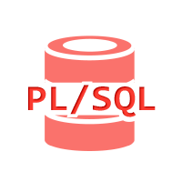

PL/SQL (Procedural Language/Structured Query Language)About PL/SQLPL/SQL (Procedural Language/Structured Query LanPL/SQLguage) is Oracle Corporation's procedural extension for SQL and the Oracle relational database. PL/SQL is available in Oracle Database (since version 7), TimesTen in-memory database (since version 11.2.1), and IBM DB2 (since version 9.7). Oracle Corporation usually extends PL/SQL functionality with each successive release of the Oracle Database. PL/SQL includes procedural language elements such as conditions and loops. It allows declaration of constants and variables, procedures and functions, types and variables of those types, and triggers. It can handle exceptions (runtime errors). Arrays are supported involving the use of PL/SQL collections. Implementations from version 8 of Oracle Database onwards have included features associated with object-orientation. One can create PL/SQL units such as procedures, functions, packages, types, and triggers, which are stored in the database for reuse by applications that use any of the Oracle Database programmatic interfaces.  Click on the Image to view the complete PL/SQL Tutorial |